A family group chat for India's elders, built on Nexconn Chat. The family keeps typing as it always has. Each grandparent receives every message in their own language, at their own size, read aloud on request, and checked for scams.
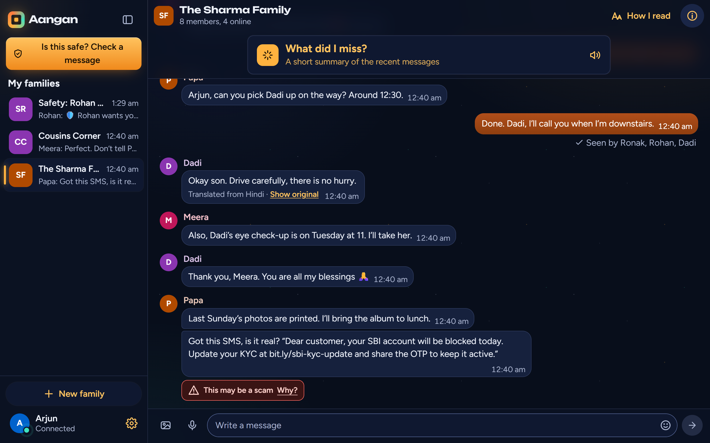
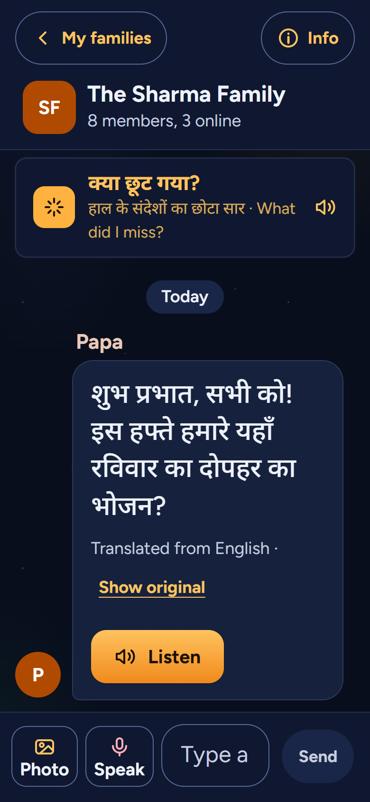
Arjun, 24 · Standard · English Dadi, 71 · Comfort · हिंदीIndia's family life now runs through group chats, but most of its 149 million people over 60 cannot fully take part: the text is too small, the language is wrong, typing is hard, and the same chats carry the scams that target them. Aangan fixes this without asking anyone to change how they type.
Messengers send the sender's version of a message to everyone. Aangan keeps one original and lets the reader decide how it looks, sounds and reads: language, script, text size, layout and voice. Arjun types Hinglish; Papa reads English; Dadi reads large Hindi and can tap Listen.
Group channels, real-time messages, voice messages, photos, read receipts, presence, message metadata, user profiles, built-in translation, and the Platform Chat API on the server. Page 12 maps every feature to its SDK call.
One Render service serves the web app and API. iPhone app on Expo, same backend.
118 automated AI tests, an API smoke test, typechecks for server, web and iPhone.
App Secret never leaves the server. Every AI feature falls back to rules, never an error.
More elders live apart from their children: about one in five live alone or only with a spouse, "left behind at their ancestral homes" as the young move to cities. For these families the group chat is where plans are made, photos are shared and health is discussed. A chat built for fast English or Hinglish shuts the elders out.
Hyderabad police found most digital-arrest victims were 60 to 80, often with children abroad. WhatsApp users over 65 were the most vulnerable to misinformation in an Indian study (Bapaye & Bapaye, 2021). Full sources on page 16.
That is why a single setting never brings them back into the conversation. Each row is a real scene from the Sharma family, our demo family.
| Pain point | Evidence | In the Sharma family |
|---|---|---|
| 1. Text too small to read | 32.2% of Indians 60+ have low near vision and 23.2% report cataract, yet only 37.4% use spectacles (LASI). | "Lunch moved to 1 pm" scrolls past in small grey text. Dadi arrives at 12. |
| 2. The wrong language or script | India has 121 languages (Census 2011); 98% of internet users go online in Indic languages (IAMAI-Kantar 2024). Generic translation fails on Hinglish: Nexconn's built-in engine turned "kal subah 9 baje aa jana" (come tomorrow at 9) into "if you wake up at 9" in our test. | Arjun writes Hinglish; Dadi reads Devanagari. She guesses, or waits for a call that doesn't come. |
| 3. Typing, and reading itself, are hard | Only 39.6% of Indians 60+ are literate (LASI). 59% have no digital device; 66% find digital tools "too confusing" (HelpAge India). | Dadi has things to say but types one letter at a time, so she sends a thumbs-up and stops. |
| 4. Fraud and fake forwards | Digital arrest scams: ₹91 crore in 2022 to ₹1,935.5 crore in 2024 (NCRP). Most Hyderabad victims were 60 to 80. | A message says her grandson is in trouble and asks for money on a link. Nobody sees it until the money is gone. |
| 5. Loneliness and silent emergencies | 13.4% of Indian elders feel frequently lonely; 22.9% report a fall (LASI). Loneliness is linked to 871,000 deaths a year worldwide (WHO 2025). | Dadi goes quiet in the group. The family assumes she is busy. |
Dadi, 71, a widow in Lucknow. Reads Hindi comfortably, English slowly, types with one finger.
Needs: messages in her language and size, a way to listen, a way to reply by speaking.
Arjun, 24, working in Bengaluru. Types Hinglish in quick bursts between meetings.
Needs: to know she got the message and is safe, with no change to how he types.
One group holds lunch plans, photos, doctor visits and forwards, but splits into "the young group" and phone calls.
Needs: one room where everyone takes part their own way.
The person who suffers is the elder; the person who acts is the adult child. Aangan is designed for the first and adopted through the second: one adult child invites five to ten family members.
Every option today asks the elder to adapt to the message. Aangan adapts the message to the elder. One message is stored once, unchanged; each member's app turns it into their form.
Language, script, size, layout and voice are chosen by the reader, once, in "How I read". Nobody changes for anybody else.
Hinglish is treated as its own language. Times, names and numbers are kept exactly: "9 baje" stays 9.
Every translation says it is one and keeps the original in view. If translation isn't good enough, the original shows with a plain note, never a guess.
| Today's option | Where it fails the elder |
|---|---|
| WhatsApp and similar | The sender's words, language and script are what everyone gets; scam forwards look like any other message. |
| Phone font size, screen readers | Scales the whole phone and breaks layouts; does nothing for language; hard to learn late in life. |
| "Senior" phones and launchers | Cut the elder off from the family's real chat, or are a second app the family never opens. |
| Translation apps | Copy, switch app, paste, read, switch back: impossible in a busy group. |
Each message is made understandable, easy to answer and checked for scams. The family does not change how it types, and the elder is never moved to a separate "senior" space: grandson and grandmother see the same message at the same moment, each in their own way.
Standard is a full three-pane chat for the family. Comfort is the same live room with larger type, one column, labelled buttons and Listen in every incoming bubble. Each reader picks once.
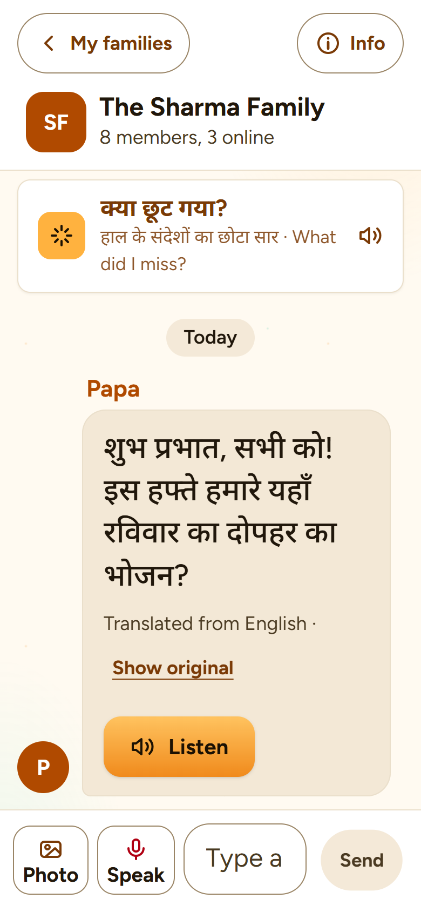
A risky message gives Dadi a large, plain warning she can listen to, with one button to ask her family. Arjun sees a small note on the same message. Most scams arrive from outside the family, so "Is this safe?" checks anything she pastes.
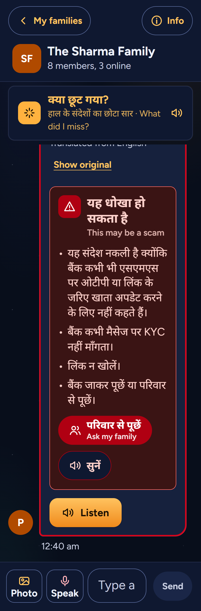
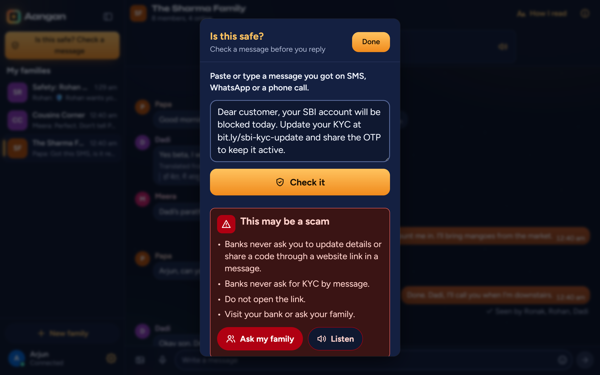
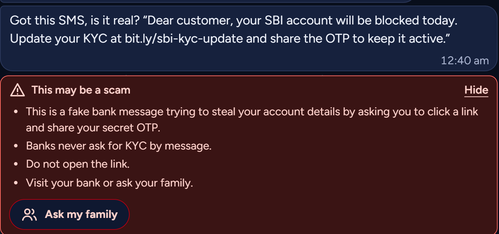
"What did I miss?" sits under the room header. Tap it and the AI writes a short summary of the new messages, or the recent ones, in the reader's language, with Listen. Quick replies come in her language too.
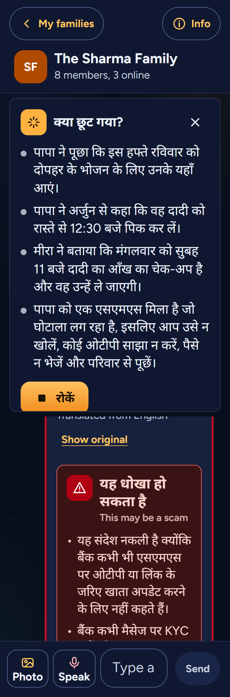
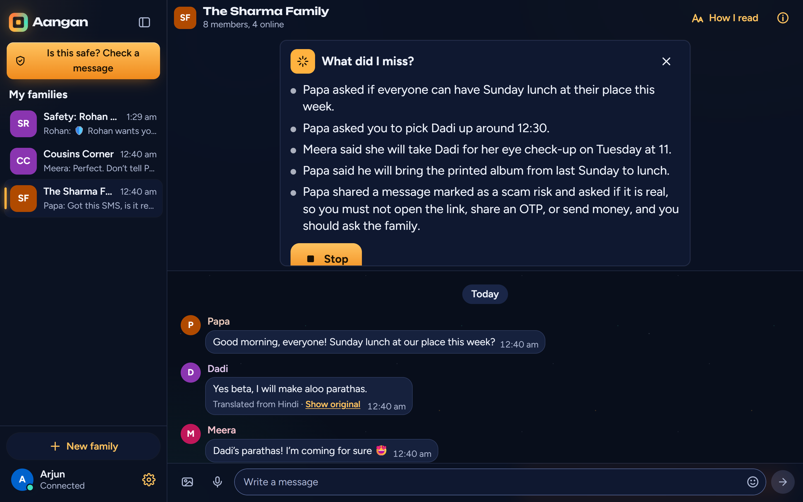
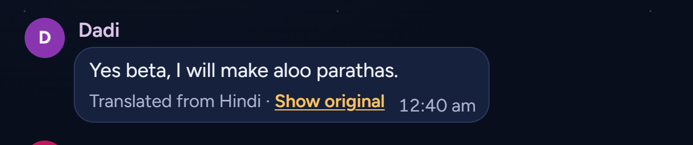
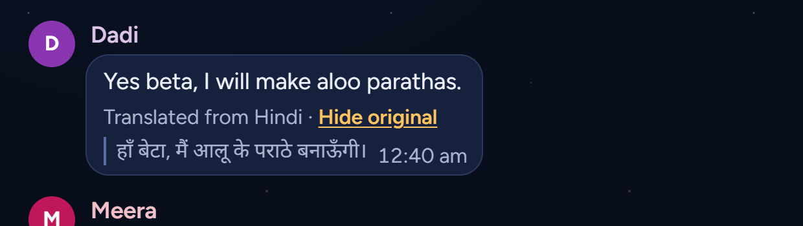
Reads the translated message aloud in the reader's language. For elders who find reading tiring or cannot read.
Speak, see the words, then send a real voice message with its transcript. Others read and translate it like text.
Under each message, so Arjun knows Dadi read it without having to call.
Arjun starts a family and shares an invite link. Each person chooses how they read in Settings. A live two-view showcase lets judges see both readers side by side.
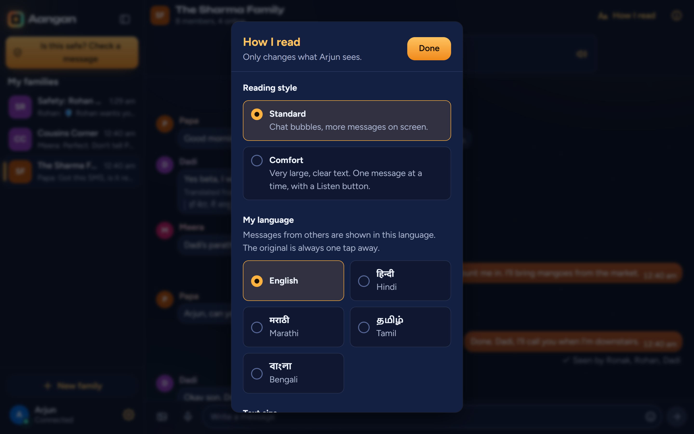
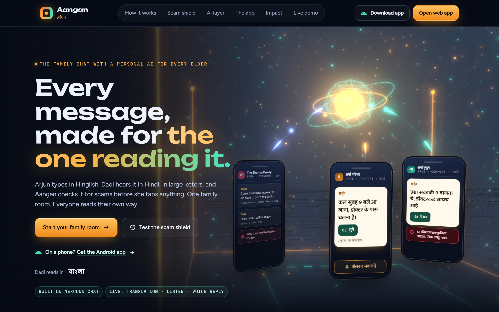
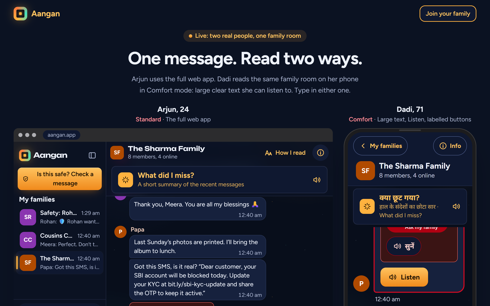
A native app built with React Native and TypeScript on Expo, on the same backend. Three big tiles, nothing else to learn. It follows the phone's light or dark setting and opens in the reader's own language.
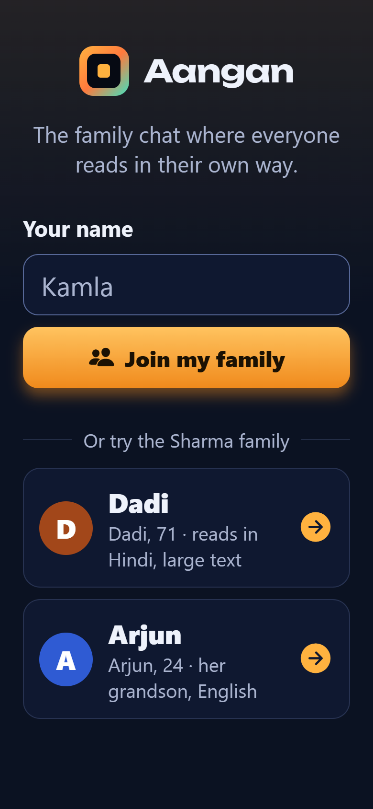
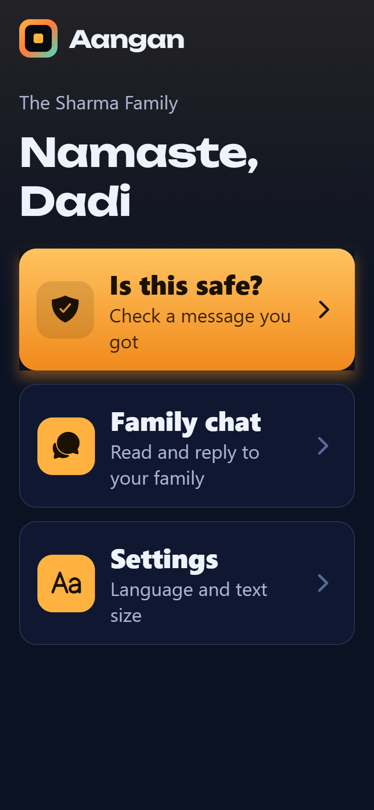
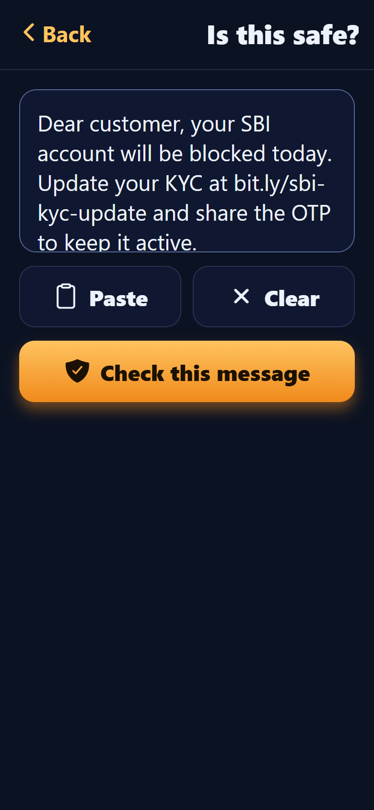
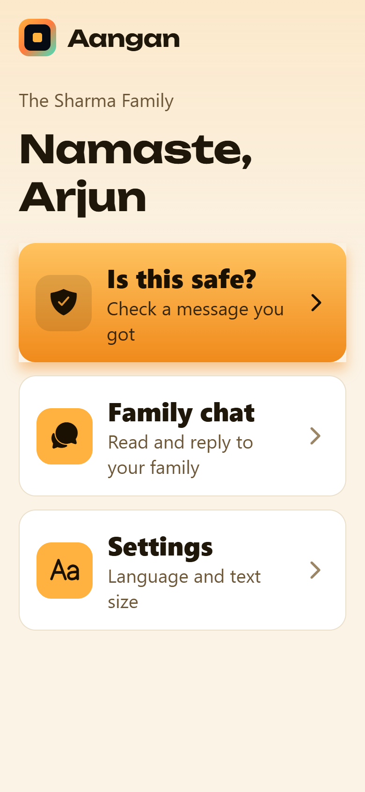
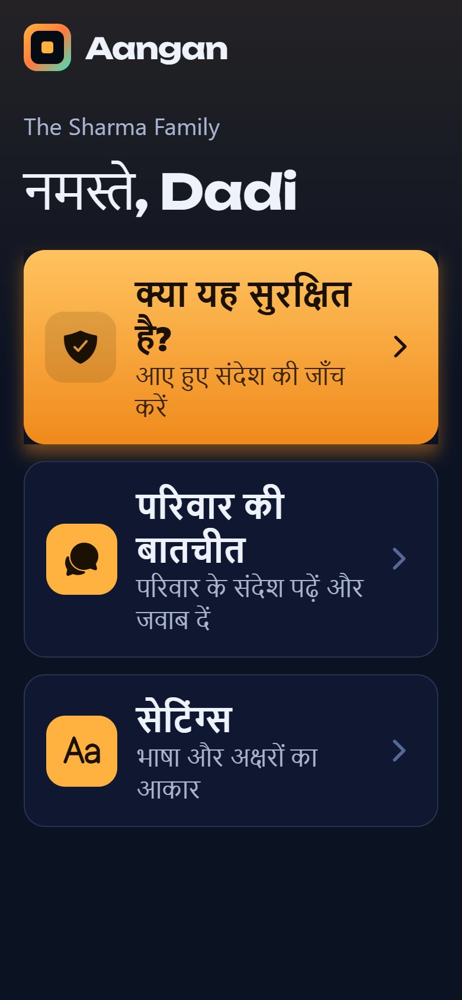
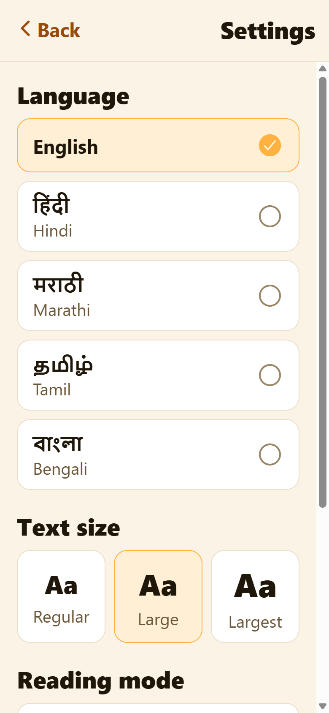
English, हिन्दी, मराठी, தமிழ், বাংলা. The Dadi demo opens in Hindi, Comfort, larger text.
The verdict reads itself aloud; "Ask Arjun" alerts the family.
Nexconn has no React Native SDK, so the chat is our Nexconn web client in a WebView, signed in with the app's session. 64-point tap targets throughout.
Screens captured from the app's Expo web preview; the same code runs in Expo Go on iPhone.
Web client: @nexconn/chat and @nexconn/engine 26.2.1, isolated in one folder (web/src/nexconn/). Server: the signed Platform Chat API, with automatic failover to the backup domain. Area: Singapore.
| Aangan feature | Nexconn API | Where |
|---|---|---|
| Sign-in and live connection | POST /v4/auth/access-token/issue · NCEngine.initialize · connect · addConnectionStatusHandler | Server issues the token; client connects, shows an offline notice |
| Families (group chats) and invites | POST /v4/group-channel/create · /join · GroupChannel.createJoinedGroupsByRoleQuery · getGroupsInfo | New family, invite links, My families list |
| Real-time messages, replies | sendMessage (SendTextMessageParams, SendReferenceMessageParams) · addMessageHandler | Chat, with sender name and photo in senderUserInfo |
| History and unread counts | BaseChannel.createMessagesQuery · createChannelsQuery · getMessagesByIds | Scroll back, room list previews, unread badges |
| Voice reply | sendMediaMessage (HD voice, RC:HQVCMsg) with transcript in content.extra | Elders reply by speaking |
| Photos | sendMediaMessage (image) | Share photos, lightbox |
| Reactions | Message.setMetadata / deleteMetadata · onMessageMetadataUpdated | Emoji reactions on any message |
| "Seen by" | sendReadReceiptResponse · createMessagesReadReceiptUsersQuery | Family knows the elder read it |
| Who is online | userModule.subscribeEvent · getSubscribeUsersOnlineStatus | Online dots in the family list |
| Members and profiles | createGroupMembersByRoleQuery · GroupChannelHandler · userModule.updateMyUserProfile | Member list, name, photo, colour |
| Built-in translation (fallback) | translateModule.translateMessages · addTranslateHandler | en→hi, en→mr, Devanagari→en when the AI is unavailable |
| Ask my family, demo family | POST /v4/group-channel/message/send (isEchoToSender) | Private alert to the guardian; seeds the showcase room |
The App Secret stays on the server: requests are signed with SHA1(secret + nonce + timestamp). The browser never calls the Nexconn REST API directly.
Clients talk to Nexconn directly for everything live. Our server only does what needs a secret or an AI: tokens, groups, translation, the scam shield and summaries.
For an elder, a confident mistake does more harm than an honest "not available". So every AI step has a guard, and every failure has a calm fallback.
Every AI endpoint falls back to rules or fixed text and never returns an error. Sarvam is tried first; a bad key, empty credits or an outage switches to Gemini automatically.
Answers in the wrong script, or that come back untranslated, are rejected rather than shown. Times, names and numbers are kept. The original is shown whenever a translation is shown or unavailable.
The Nexconn App Secret and AI keys never reach the browser. Our own auth keys are separate from Nexconn tokens. Every route is rate limited.
A separate test room with mocked AI and translation. The smoke test refuses to run unless the server is mocked, and the server refuses if the test room equals the family room.
The server starts and supervises the Python service, restarts it with backoff, and adopts a healthy one already running.
The elder is the user; the adult child is the buyer. Aangan stays free for every family and earns from people and organisations that pay for an elder's safety.
The shared room, Comfort mode, translation, Listen, voice reply.
Paid by the adult child: scam alerts to a trusted member, daily check-in alerts, more AI languages.
Senior living communities, elder-care NGOs, and banks or insurers that want fewer fraud losses among older customers.
One adult child sets Aangan up and sends invite links, so one decision brings 5 to 10 active Nexconn users per family. Each invited relative can start their own family.
Translation is cached once per message and language; the AI only sees messages the rules flag. The Nexconn Free Chat Plan covers 10,000 monthly active users.
| Success looks like | How we count it (no message content read) |
|---|---|
| Elders take part again | Messages sent per elder per week, before and after joining (Nexconn message counts) |
| Elders understand | Share of messages read by elders (read receipts) and played aloud (Listen events) |
| Fewer fall for fraud | Warnings shown, "Ask my family" alerts sent and answered |
Traction, honestly: Aangan has been built and tested by our team with the demo family; it has no outside users yet. The pilot with real families is the first gate, measured with the numbers above.
Open aangan-d550.onrender.com/showcase to see Arjun's web app and Dadi's phone side by side, live, no sign-up. The free server sleeps when idle; the first visit can take up to a minute.
Opened Nov 21, 2026. Figures reported by news outlets are marked as such.